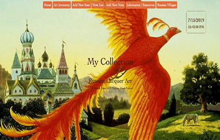
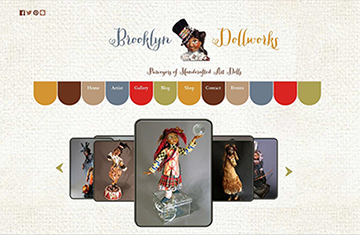
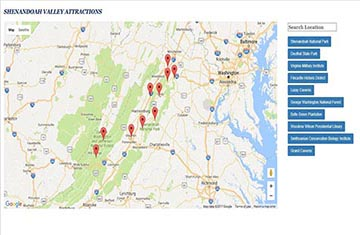
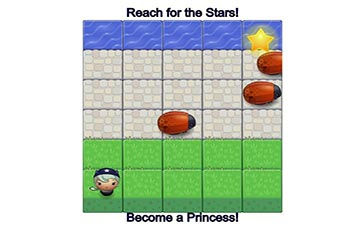

My Collection
Single page application created to retain a record of personal collections of art. Utilizes ReactJs to manage the user interface, Redux to maintain state and Rails for the back-end.
Luxury Spa

Single page application for a luxury day spa. Uses Rails to maintain database with Rails routes to render JSON API. Adds dynamic JavaScript features for user interface.
Travel Log

Travel Log application created using Sinatra with Active-Record in a lightweight MVC framework pattern.
Brooklyn Dollworks
This website is built using Bootstrap and Jquery plug-ins for user interactivity. This is a business website created and designed for Brooklyn Dollworks.
Neighborhood Map
A web application using the Google Maps API with Knockout JS to create a neighborhood map of interesting locations. This was the final project of the Udacity Front End Nanodegree.
Arcade Game
This project was an assignment for Udacity Front-End Nanodegree program. It introduces Object Oriented JS and HTML5 Canvas to initiate a classic arcade game.